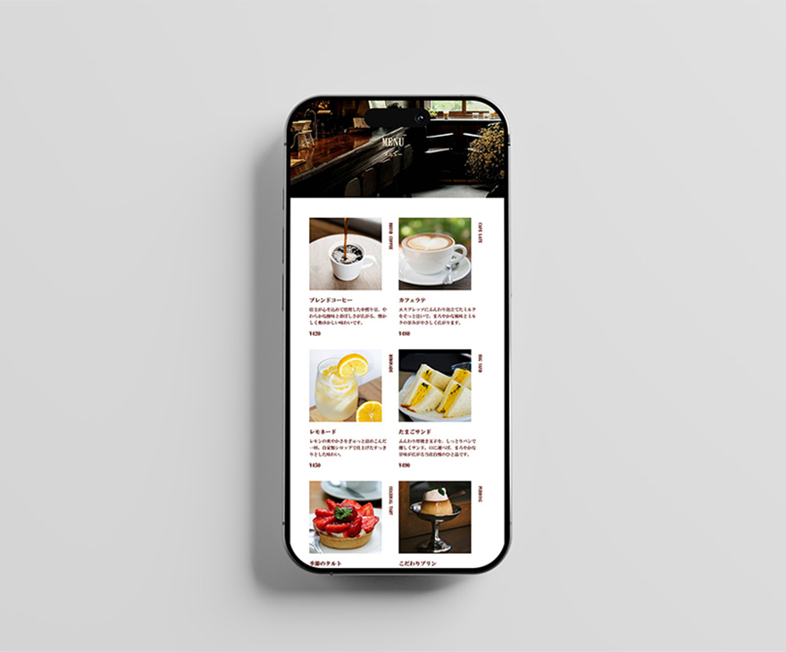

WORK
喫茶AMBER
リニューアルサイト
"来店前からお店の世界観や居心地の良さを感じられるようなサイト"

設計ポイント
導線設計
- 1. Instagram・YouTubeで喫茶AMBERを知る
- 2. 店名検索から公式サイトへアクセス
- 3. トップページで店の雰囲気を確認
- 4. メニュー・アクセス情報を見る
- 5. 保存・シェア → 来店へ
UI設計
- o 落ち着いた色味のファーストビューで店舗の雰囲気を伝達
- o 店内紹介のYouTube動画を組み込み、「行ってみたい」と思わせる仕掛け
- o Googleマップの埋め込みや営業時間表示で来店のハードルを下げる
- o Instagramリンクの掲載でSNS接点を強化
コンテンツ設計
- o レトロな店内写真とスイーツの写真で視覚的魅力を訴求
- o メニュー写真に説明文を加え、こだわりや味の特徴が伝わる構成
- o おすすめ商品や回遊しやすいサイドバーでサイト内の動線も意識
デザインの工夫
- 配色
- 深みのあるブラウン（#5d140b）、やさしいベージュ（#ede0c5）、
温かみのあるオレンジ（#bf4804）で懐かしさと温もりを表現 - フォント
- レトロさとクラシカルな印象を与える「HG明朝E」「Garamond」
- レイアウト
- 過度に装飾せず余白を活かしたシンプルなレイアウト
- メニュー演出
- 英語表記を加え、メニュー名を半回転させて写真横に配置することで、視線に動きをつけ、世界観への没入感を高めています。